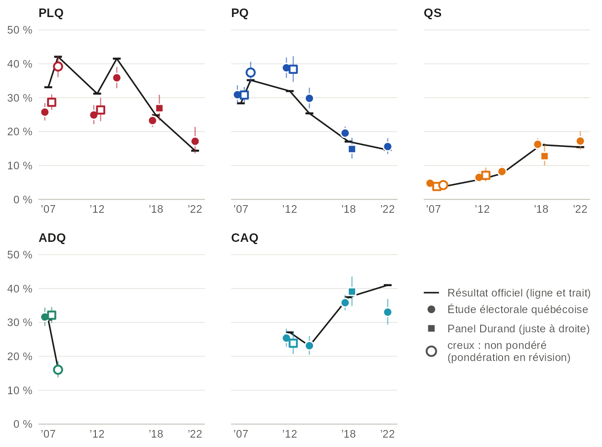
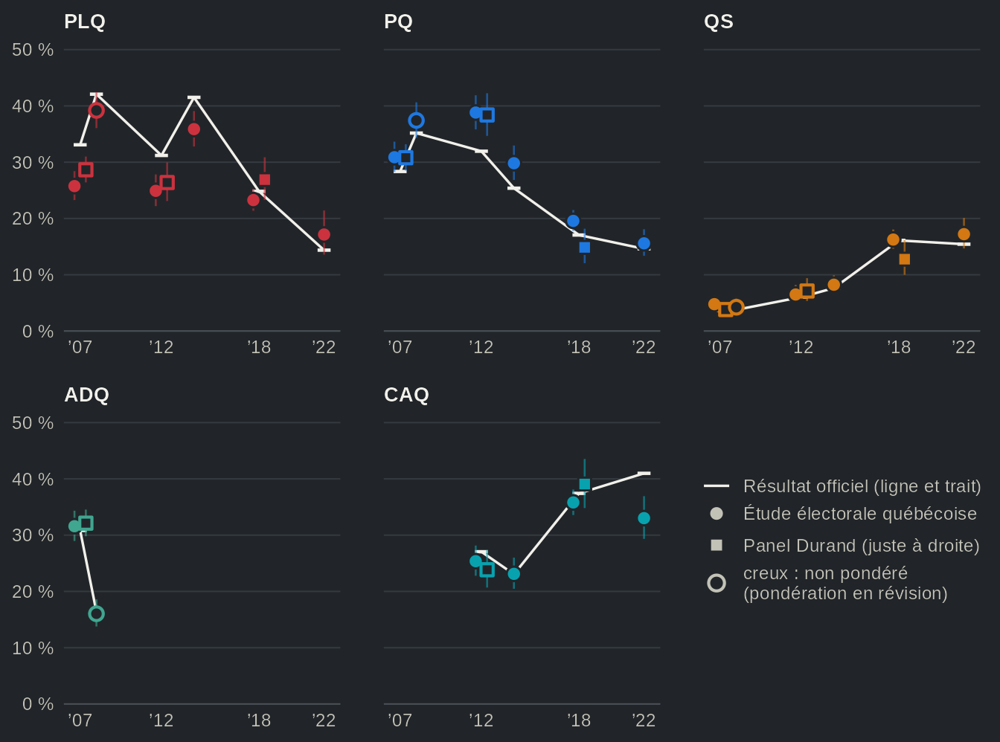

Les enquêtes se trompent-elles ? Vote déclaré et intentions face aux résultats officiels
Source:vignettes/articles/fr-enquetes-resultats.Rmd
fr-enquetes-resultats.RmdLes estimations du vote par les enquêtes s’approchent des résultats officiels, mais les atteignent rarement. En 2022, l’Étude électorale québécoise donnait à la CAQ 33 % du vote déclaré, pondéré ; la CAQ a obtenu 41 % des votes valides. Le PQ est surestimé dans la plupart des études, et le PLQ sous-estimé jusqu’en 2014. La pondération aux marges du recensement rapproche certaines études des résultats et pas d’autres : l’indice de dissimilarité entre le vote déclaré et le vote officiel de l’étude de 2012 passe de 11,0 points sans pondération à 8,0 avec, et celui de 2014 de 4,9 à 5,6.
Les données
h <- qes_harmonize(studies = qz_studies, targets = "vote_choice", missing = "reasons", quiet = TRUE)vote_choice avec son ordre de priorité par défaut : le
vote déclaré là où l’étude l’a demandé, sinon l’intention (les sondages
CROP), comme l’indique vote_choice__type :
table(h$study, h$vote_choice__type)
#>
#> recall intention_push intention
#> qes_crop_2007_2010 0 22848 1179
#> qes1998 1483 0 0
#> qes2007 2175 0 0
#> qes2007_panel 2054 0 0
#> qes2008 1151 0 0
#> qes2012 1505 0 0
#> qes2012_panel 844 0 0
#> qes2014 1517 0 0
#> qes2018 3072 0 0
#> qes2018_panel 842 0 0
#> qes2022 1220 0 0Vote déclaré et résultat officiel, parti par parti


Source : qesR, variable regroupée vote_choice (vote déclaré) des Études électorales québécoises (cercles, juste à gauche de chaque élection) et des panels Durand (carrés, juste à droite) ; résultats officiels d'Élections Québec. Points : pondérés avec la pondération postélectorale de chaque étude, intervalles de confiance à 95 % (logit). Creux : non pondéré, pondération en révision (l'étude de 2008 et les panels de 2007 et 2012) ; le panel 2018 utilise sa pondération postélectorale révisée. Les sondages de 1998 n'ont interrogé que des francophones et sont laissés de côté. La vue en tableau donne tous les partis, avec les estimations non pondérées.
Vue en tableau
| Parti | Élection | Étude | Vote déclaré, % [IC à 95 %] | n | Officiel, % des votes valides | Écart | Pondération |
|---|---|---|---|---|---|---|---|
| PLQ | 2007 | EEQ 2007 | 25,4 [23,4 ; 27,5] | 1727 | 33,1 | −7,7 pts | non pondéré |
| PLQ | 2007 | EEQ 2007 | 25,8 [23,3 ; 28,4] | 1727 | 33,1 | −7,3 pts | pondéré |
| PLQ | 2007 | Panel 2007 | 28,6 [26,4 ; 31,0] | 1494 | 33,1 | −4,4 pts | non pondéré |
| PLQ | 2008 | EEQ 2008 | 39,2 [36,1 ; 42,4] | 898 | 42,1 | −2,9 pts | non pondéré |
| PLQ | 2012 | EEQ 2012 | 21,8 [19,6 ; 24,2] | 1274 | 31,2 | −9,4 pts | non pondéré |
| PLQ | 2012 | EEQ 2012 | 24,9 [22,2 ; 27,8] | 1274 | 31,2 | −6,3 pts | pondéré |
| PLQ | 2012 | Panel 2012 | 26,4 [23,1 ; 30,0] | 633 | 31,2 | −4,8 pts | non pondéré |
| PLQ | 2014 | EEQ 2014 | 38,1 [35,5 ; 40,8] | 1283 | 41,5 | −3,4 pts | non pondéré |
| PLQ | 2014 | EEQ 2014 | 35,9 [32,8 ; 39,1] | 1283 | 41,5 | −5,6 pts | pondéré |
| PLQ | 2018 | EEQ 2018 | 24,3 [22,5 ; 26,2] | 2016 | 24,8 | −0,5 pts | non pondéré |
| PLQ | 2018 | EEQ 2018 | 23,3 [21,4 ; 25,3] | 2016 | 24,8 | −1,6 pts | pondéré |
| PLQ | 2018 | Panel 2018 | 28,4 [25,2 ; 31,9] | 704 | 24,8 | +3,6 pts | non pondéré |
| PLQ | 2018 | Panel 2018 | 26,9 [23,3 ; 30,9] | 704 | 24,8 | +2,1 pts | pondéré |
| PLQ | 2022 | EEQ 2022 | 13,3 [11,4 ; 15,4] | 1101 | 14,4 | −1,1 pts | non pondéré |
| PLQ | 2022 | EEQ 2022 | 17,1 [13,6 ; 21,4] | 1101 | 14,4 | +2,8 pts | pondéré |
| PQ | 2007 | EEQ 2007 | 30,2 [28,0 ; 32,4] | 1727 | 28,3 | +1,8 pts | non pondéré |
| PQ | 2007 | EEQ 2007 | 30,9 [28,2 ; 33,6] | 1727 | 28,3 | +2,5 pts | pondéré |
| PQ | 2007 | Panel 2007 | 30,8 [28,5 ; 33,2] | 1494 | 28,3 | +2,4 pts | non pondéré |
| PQ | 2008 | EEQ 2008 | 37,4 [34,3 ; 40,6] | 898 | 35,2 | +2,2 pts | non pondéré |
| PQ | 2012 | EEQ 2012 | 40,0 [37,3 ; 42,7] | 1274 | 31,9 | +8,0 pts | non pondéré |
| PQ | 2012 | EEQ 2012 | 38,8 [35,8 ; 41,9] | 1274 | 31,9 | +6,9 pts | pondéré |
| PQ | 2012 | Panel 2012 | 38,4 [34,7 ; 42,2] | 633 | 31,9 | +6,4 pts | non pondéré |
| PQ | 2014 | EEQ 2014 | 26,8 [24,5 ; 29,3] | 1283 | 25,4 | +1,4 pts | non pondéré |
| PQ | 2014 | EEQ 2014 | 29,8 [26,9 ; 33,0] | 1283 | 25,4 | +4,4 pts | pondéré |
| PQ | 2018 | EEQ 2018 | 19,4 [17,8 ; 21,2] | 2016 | 17,1 | +2,4 pts | non pondéré |
| PQ | 2018 | EEQ 2018 | 19,6 [17,8 ; 21,5] | 2016 | 17,1 | +2,5 pts | pondéré |
| PQ | 2018 | Panel 2018 | 15,3 [12,9 ; 18,2] | 704 | 17,1 | −1,7 pts | non pondéré |
| PQ | 2018 | Panel 2018 | 14,9 [12,1 ; 18,2] | 704 | 17,1 | −2,2 pts | pondéré |
| PQ | 2022 | EEQ 2022 | 18,7 [16,5 ; 21,1] | 1101 | 14,6 | +4,1 pts | non pondéré |
| PQ | 2022 | EEQ 2022 | 15,6 [13,4 ; 18,1] | 1101 | 14,6 | +1,0 pts | pondéré |
| ADQ | 2007 | EEQ 2007 | 33,8 [31,6 ; 36,0] | 1727 | 30,8 | +2,9 pts | non pondéré |
| ADQ | 2007 | EEQ 2007 | 31,6 [29,0 ; 34,3] | 1727 | 30,8 | +0,8 pts | pondéré |
| ADQ | 2007 | Panel 2007 | 32,1 [29,8 ; 34,5] | 1494 | 30,8 | +1,3 pts | non pondéré |
| ADQ | 2008 | EEQ 2008 | 16,0 [13,8 ; 18,6] | 898 | 16,4 | −0,3 pts | non pondéré |
| QS | 2007 | EEQ 2007 | 4,3 [3,5 ; 5,4] | 1727 | 3,6 | +0,7 pts | non pondéré |
| QS | 2007 | EEQ 2007 | 4,8 [3,6 ; 6,2] | 1727 | 3,6 | +1,1 pts | pondéré |
| QS | 2007 | Panel 2007 | 3,8 [3,0 ; 4,9] | 1494 | 3,6 | +0,2 pts | non pondéré |
| QS | 2008 | EEQ 2008 | 4,2 [3,1 ; 5,8] | 898 | 3,8 | +0,5 pts | non pondéré |
| QS | 2012 | EEQ 2012 | 7,5 [6,2 ; 9,1] | 1274 | 6,0 | +1,5 pts | non pondéré |
| QS | 2012 | EEQ 2012 | 6,5 [5,1 ; 8,2] | 1274 | 6,0 | +0,5 pts | pondéré |
| QS | 2012 | Panel 2012 | 7,1 [5,3 ; 9,4] | 633 | 6,0 | +1,1 pts | non pondéré |
| QS | 2014 | EEQ 2014 | 10,2 [8,7 ; 12,0] | 1283 | 7,6 | +2,6 pts | non pondéré |
| QS | 2014 | EEQ 2014 | 8,2 [6,8 ; 9,9] | 1283 | 7,6 | +0,6 pts | pondéré |
| QS | 2018 | EEQ 2018 | 17,0 [15,4 ; 18,7] | 2016 | 16,1 | +0,9 pts | non pondéré |
| QS | 2018 | EEQ 2018 | 16,3 [14,6 ; 18,0] | 2016 | 16,1 | +0,1 pts | pondéré |
| QS | 2018 | Panel 2018 | 12,4 [10,1 ; 15,0] | 704 | 16,1 | −3,7 pts | non pondéré |
| QS | 2018 | Panel 2018 | 12,8 [10,0 ; 16,2] | 704 | 16,1 | −3,3 pts | pondéré |
| QS | 2022 | EEQ 2022 | 19,0 [16,8 ; 21,4] | 1101 | 15,4 | +3,6 pts | non pondéré |
| QS | 2022 | EEQ 2022 | 17,2 [14,7 ; 20,1] | 1101 | 15,4 | +1,8 pts | pondéré |
| CAQ | 2012 | EEQ 2012 | 25,4 [23,1 ; 27,9] | 1274 | 27,1 | −1,6 pts | non pondéré |
| CAQ | 2012 | EEQ 2012 | 25,4 [22,8 ; 28,1] | 1274 | 27,1 | −1,7 pts | pondéré |
| CAQ | 2012 | Panel 2012 | 23,9 [20,7 ; 27,3] | 633 | 27,1 | −3,2 pts | non pondéré |
| CAQ | 2014 | EEQ 2014 | 21,6 [19,4 ; 23,9] | 1283 | 23,1 | −1,5 pts | non pondéré |
| CAQ | 2014 | EEQ 2014 | 23,1 [20,5 ; 26,0] | 1283 | 23,1 | +0,1 pts | pondéré |
| CAQ | 2018 | EEQ 2018 | 34,7 [32,7 ; 36,8] | 2016 | 37,4 | −2,7 pts | non pondéré |
| CAQ | 2018 | EEQ 2018 | 35,8 [33,6 ; 38,1] | 2016 | 37,4 | −1,6 pts | pondéré |
| CAQ | 2018 | Panel 2018 | 37,4 [33,9 ; 41,0] | 704 | 37,4 | −0,1 pts | non pondéré |
| CAQ | 2018 | Panel 2018 | 39,1 [34,8 ; 43,5] | 704 | 37,4 | +1,7 pts | pondéré |
| CAQ | 2022 | EEQ 2022 | 33,1 [30,3 ; 35,9] | 1101 | 41,0 | −7,9 pts | non pondéré |
| CAQ | 2022 | EEQ 2022 | 33,0 [29,3 ; 36,9] | 1101 | 41,0 | −8,0 pts | pondéré |
| PCQ | 2012 | EEQ 2012 | n.p. | 1274 | non pondéré | ||
| PCQ | 2012 | EEQ 2012 | n.p. | 1274 | pondéré | ||
| PCQ | 2012 | Panel 2012 | n.p. | 633 | non pondéré | ||
| PCQ | 2014 | EEQ 2014 | n.p. | 1283 | non pondéré | ||
| PCQ | 2014 | EEQ 2014 | n.p. | 1283 | pondéré | ||
| PCQ | 2018 | EEQ 2018 | n.p. | 2016 | non pondéré | ||
| PCQ | 2018 | EEQ 2018 | n.p. | 2016 | pondéré | ||
| PCQ | 2018 | Panel 2018 | n.p. | 704 | non pondéré | ||
| PCQ | 2018 | Panel 2018 | n.p. | 704 | pondéré | ||
| PCQ | 2022 | EEQ 2022 | 13,2 [11,3 ; 15,3] | 1101 | 12,9 | +0,3 pts | non pondéré |
| PCQ | 2022 | EEQ 2022 | 13,5 [11,3 ; 16,2] | 1101 | 12,9 | +0,6 pts | pondéré |
| Autres | 2007 | EEQ 2007 | 6,3 [5,3 ; 7,6] | 1727 | 4,1 | +2,2 pts | non pondéré |
| Autres | 2007 | EEQ 2007 | 7,0 [5,6 ; 8,8] | 1727 | 4,1 | +2,9 pts | pondéré |
| Autres | 2007 | Panel 2007 | 4,6 [3,7 ; 5,8] | 1494 | 4,1 | +0,5 pts | non pondéré |
| Autres | 2008 | EEQ 2008 | 3,1 [2,2 ; 4,5] | 898 | 2,6 | +0,5 pts | non pondéré |
| Autres | 2012 | EEQ 2012 | 5,3 [4,2 ; 6,6] | 1274 | 3,8 | +1,5 pts | non pondéré |
| Autres | 2012 | EEQ 2012 | 4,4 [3,4 ; 5,7] | 1274 | 3,8 | +0,6 pts | pondéré |
| Autres | 2012 | Panel 2012 | 4,3 [2,9 ; 6,1] | 633 | 3,8 | +0,5 pts | non pondéré |
| Autres | 2014 | EEQ 2014 | 3,3 [2,4 ; 4,4] | 1283 | 2,4 | +0,9 pts | non pondéré |
| Autres | 2014 | EEQ 2014 | 3,0 [2,1 ; 4,2] | 1283 | 2,4 | +0,5 pts | pondéré |
| Autres | 2018 | EEQ 2018 | 4,6 [3,7 ; 5,6] | 2016 | 4,6 | 0,0 pts | non pondéré |
| Autres | 2018 | EEQ 2018 | 5,1 [4,1 ; 6,3] | 2016 | 4,6 | +0,5 pts | pondéré |
| Autres | 2018 | Panel 2018 | 6,5 [4,9 ; 8,6] | 704 | 4,6 | +1,9 pts | non pondéré |
| Autres | 2018 | Panel 2018 | 6,4 [4,5 ; 9,0] | 704 | 4,6 | +1,8 pts | pondéré |
| Autres | 2022 | EEQ 2022 | 2,8 [2,0 ; 4,0] | 1101 | 1,7 | +1,1 pts | non pondéré |
| Autres | 2022 | EEQ 2022 | 3,5 [2,0 ; 6,1] | 1101 | 1,7 | +1,8 pts | pondéré |
À remarquer :
- Le PQ est surestimé dans la plupart des études : +7 pts en 2012, +4 pts en 2014.
- Le PLQ est sous-estimé à chaque élection de 2007 à 2014, de −6 pts en 2014, l’année de sa victoire.
- Le gagnant n’est pas toujours surestimé : en 2022, la CAQ est 8 points sous son résultat.
La pondération aide-t-elle ?


Source : qesR, variable regroupée vote_choice (vote déclaré) ; résultats officiels d'Élections Québec. Indice de dissimilarité : la moitié de la somme, sur les partis, de l'écart absolu entre la part déclarée et la part officielle, en points (0 : identiques ; la part des votants qui devraient changer de parti). Un parti qu'une étude ne proposait pas compte dans ses Autres. L'étude de 2008 et les panels de 2007 et 2012 n'ont pas de pondération révisée : leur indice non pondéré est dans la vue en tableau.
Vue en tableau
| Élection | Étude | Pondération | Indice de dissimilarité (points) |
|---|---|---|---|
| 2007 | EEQ 2007 | non pondéré | 7,7 |
| 2007 | EEQ 2007 | pondéré | 7,3 |
| 2007 | Panel 2007 | non pondéré | 4,4 |
| 2008 | EEQ 2008 | non pondéré | 3,2 |
| 2012 | EEQ 2012 | non pondéré | 11,0 |
| 2012 | EEQ 2012 | pondéré | 8,0 |
| 2012 | Panel 2012 | non pondéré | 8,0 |
| 2014 | EEQ 2014 | non pondéré | 4,9 |
| 2014 | EEQ 2014 | pondéré | 5,6 |
| 2018 | EEQ 2018 | non pondéré | 3,2 |
| 2018 | EEQ 2018 | pondéré | 3,2 |
| 2018 | Panel 2018 | non pondéré | 5,5 |
| 2018 | Panel 2018 | pondéré | 5,5 |
| 2022 | EEQ 2022 | non pondéré | 9,0 |
| 2022 | EEQ 2022 | pondéré | 8,0 |
À remarquer :
- La pondération rapproche 2012 et 2022 du résultat officiel, de 3,0 et 1,1 points, et éloigne légèrement 2014 : elle ajuste l’échantillon aux marges du recensement, pas au vote.
- L’étude de 2008 et le panel 2007, non pondérés, à 3,2 et 4,4 points, sont plus proches du résultat officiel que la plupart des études pondérées (de 5,5 à 8,0 ; seule celle de 2018 les égale, à 3,2) : pondérer aux marges du recensement ne garantit pas un vote plus juste.
Deux ans et demi de sondages CROP autour de l’élection de 2008


Source : qesR, variable regroupée vote_choice des sondages CROP (l'intention, avec relance des indécis là où le sondage les a relancés), environ 1 000 répondants par mois, parmi ceux qui nomment un parti. Non pondéré : la pondération des sondages (XPOND) est en révision. Lignes foncées : la moyenne des sondages à un mois et demi ou moins de chaque sondage ; lignes pâles : chaque mois. Les intervalles de confiance à 95 % (logit) de chaque sondage sont dans la vue en tableau. Losanges : résultats officiels du 8 décembre 2008.
Vue en tableau
| Sondage (mois) | Parti | Intention, % [IC à 95 %] | n |
|---|---|---|---|
| 2007-06 | PLQ | 25,8 [23,0 ; 28,8] | 869 |
| 2007-06 | PQ | 29,6 [26,6 ; 32,7] | 869 |
| 2007-06 | ADQ | 29,5 [26,5 ; 32,6] | 869 |
| 2007-06 | QS | 6,4 [5,0 ; 8,3] | 869 |
| 2007-06 | CAQ | — | |
| 2007-06 | PCQ | — | |
| 2007-06 | Autres | 8,7 [7,0 ; 10,8] | 869 |
| 2007-08 | PLQ | 25,0 [22,2 ; 28,0] | 865 |
| 2007-08 | PQ | 34,6 [31,5 ; 37,8] | 865 |
| 2007-08 | ADQ | 29,7 [26,8 ; 32,8] | 865 |
| 2007-08 | QS | 4,3 [3,1 ; 5,8] | 865 |
| 2007-08 | CAQ | — | |
| 2007-08 | PCQ | — | |
| 2007-08 | Autres | 6,5 [5,0 ; 8,3] | 865 |
| 2007-09 | PLQ | 21,6 [19,0 ; 24,5] | 866 |
| 2007-09 | PQ | 31,4 [28,4 ; 34,6] | 866 |
| 2007-09 | ADQ | 34,8 [31,7 ; 38,0] | 866 |
| 2007-09 | QS | 5,5 [4,2 ; 7,3] | 866 |
| 2007-09 | CAQ | — | |
| 2007-09 | PCQ | — | |
| 2007-09 | Autres | 6,7 [5,2 ; 8,6] | 866 |
| 2007-10 | PLQ | 27,6 [24,7 ; 30,7] | 847 |
| 2007-10 | PQ | 31,8 [28,7 ; 35,0] | 847 |
| 2007-10 | ADQ | 30,5 [27,5 ; 33,6] | 847 |
| 2007-10 | QS | 3,8 [2,7 ; 5,3] | 847 |
| 2007-10 | CAQ | — | |
| 2007-10 | PCQ | — | |
| 2007-10 | Autres | 6,4 [4,9 ; 8,2] | 847 |
| 2007-11 | PLQ | 26,6 [23,8 ; 29,6] | 884 |
| 2007-11 | PQ | 35,1 [32,0 ; 38,3] | 884 |
| 2007-11 | ADQ | 27,4 [24,5 ; 30,4] | 884 |
| 2007-11 | QS | 4,4 [3,2 ; 6,0] | 884 |
| 2007-11 | CAQ | — | |
| 2007-11 | PCQ | — | |
| 2007-11 | Autres | 6,6 [5,1 ; 8,4] | 884 |
| 2008-01 | PLQ | 29,3 [26,3 ; 32,3] | 882 |
| 2008-01 | PQ | 36,1 [32,9 ; 39,3] | 882 |
| 2008-01 | ADQ | 24,6 [21,9 ; 27,6] | 882 |
| 2008-01 | QS | 5,1 [3,8 ; 6,8] | 882 |
| 2008-01 | CAQ | — | |
| 2008-01 | PCQ | — | |
| 2008-01 | Autres | 5,0 [3,7 ; 6,6] | 882 |
| 2008-02 | PLQ | 31,4 [28,3 ; 34,6] | 845 |
| 2008-02 | PQ | 33,1 [30,0 ; 36,4] | 845 |
| 2008-02 | ADQ | 23,8 [21,0 ; 26,8] | 845 |
| 2008-02 | QS | 5,1 [3,8 ; 6,8] | 845 |
| 2008-02 | CAQ | — | |
| 2008-02 | PCQ | — | |
| 2008-02 | Autres | 6,6 [5,1 ; 8,5] | 845 |
| 2008-03 | PLQ | 32,8 [29,8 ; 36,0] | 875 |
| 2008-03 | PQ | 32,2 [29,2 ; 35,4] | 875 |
| 2008-03 | ADQ | 22,4 [19,8 ; 25,3] | 875 |
| 2008-03 | QS | 6,1 [4,7 ; 7,8] | 875 |
| 2008-03 | CAQ | — | |
| 2008-03 | PCQ | — | |
| 2008-03 | Autres | 6,5 [5,1 ; 8,4] | 875 |
| 2008-04 | PLQ | 36,2 [33,0 ; 39,6] | 817 |
| 2008-04 | PQ | 31,0 [27,9 ; 34,2] | 817 |
| 2008-04 | ADQ | 18,6 [16,1 ; 21,4] | 817 |
| 2008-04 | QS | 5,6 [4,2 ; 7,4] | 817 |
| 2008-04 | CAQ | — | |
| 2008-04 | PCQ | — | |
| 2008-04 | Autres | 8,6 [6,8 ; 10,7] | 817 |
| 2008-05 | PLQ | 37,9 [34,7 ; 41,2] | 849 |
| 2008-05 | PQ | 35,8 [32,6 ; 39,1] | 849 |
| 2008-05 | ADQ | 13,9 [11,7 ; 16,4] | 849 |
| 2008-05 | QS | 6,0 [4,6 ; 7,8] | 849 |
| 2008-05 | CAQ | — | |
| 2008-05 | PCQ | — | |
| 2008-05 | Autres | 6,4 [4,9 ; 8,2] | 849 |
| 2008-06 | PLQ | 33,3 [30,3 ; 36,5] | 877 |
| 2008-06 | PQ | 35,5 [32,4 ; 38,7] | 877 |
| 2008-06 | ADQ | 17,0 [14,6 ; 19,6] | 877 |
| 2008-06 | QS | 8,0 [6,4 ; 10,0] | 877 |
| 2008-06 | CAQ | — | |
| 2008-06 | PCQ | — | |
| 2008-06 | Autres | 6,3 [4,8 ; 8,1] | 877 |
| 2008-08 | PLQ | 40,8 [37,5 ; 44,2] | 818 |
| 2008-08 | PQ | 33,4 [30,2 ; 36,7] | 818 |
| 2008-08 | ADQ | 16,6 [14,2 ; 19,3] | 818 |
| 2008-08 | QS | 3,9 [2,8 ; 5,5] | 818 |
| 2008-08 | CAQ | — | |
| 2008-08 | PCQ | — | |
| 2008-08 | Autres | 5,3 [3,9 ; 7,0] | 818 |
| 2008-09 | PLQ | 39,7 [36,6 ; 43,0] | 911 |
| 2008-09 | PQ | 33,6 [30,6 ; 36,7] | 911 |
| 2008-09 | ADQ | 16,9 [14,6 ; 19,5] | 911 |
| 2008-09 | QS | 4,5 [3,3 ; 6,1] | 911 |
| 2008-09 | CAQ | — | |
| 2008-09 | PCQ | — | |
| 2008-09 | Autres | 5,3 [4,0 ; 6,9] | 911 |
| 2008-10 | PLQ | 36,9 [33,7 ; 40,2] | 849 |
| 2008-10 | PQ | 33,9 [30,8 ; 37,2] | 849 |
| 2008-10 | ADQ | 16,1 [13,8 ; 18,8] | 849 |
| 2008-10 | QS | 5,5 [4,2 ; 7,3] | 849 |
| 2008-10 | CAQ | — | |
| 2008-10 | PCQ | — | |
| 2008-10 | Autres | 7,5 [5,9 ; 9,5] | 849 |
| 2008-11 | PLQ | 41,3 [38,0 ; 44,6] | 870 |
| 2008-11 | PQ | 33,0 [29,9 ; 36,2] | 870 |
| 2008-11 | ADQ | 13,7 [11,5 ; 16,1] | 870 |
| 2008-11 | QS | 4,1 [3,0 ; 5,7] | 870 |
| 2008-11 | CAQ | — | |
| 2008-11 | PCQ | — | |
| 2008-11 | Autres | 7,9 [6,3 ; 9,9] | 870 |
| 2009-01 | PLQ | 39,3 [36,1 ; 42,7] | 839 |
| 2009-01 | PQ | 35,4 [32,2 ; 38,7] | 839 |
| 2009-01 | ADQ | 13,2 [11,1 ; 15,7] | 839 |
| 2009-01 | QS | 6,4 [5,0 ; 8,3] | 839 |
| 2009-01 | CAQ | — | |
| 2009-01 | PCQ | — | |
| 2009-01 | Autres | 5,6 [4,2 ; 7,4] | 839 |
| 2009-03 | PLQ | 32,7 [29,5 ; 36,0] | 798 |
| 2009-03 | PQ | 40,4 [37,0 ; 43,8] | 798 |
| 2009-03 | ADQ | 10,8 [8,8 ; 13,1] | 798 |
| 2009-03 | QS | 8,6 [6,9 ; 10,8] | 798 |
| 2009-03 | CAQ | — | |
| 2009-03 | PCQ | — | |
| 2009-03 | Autres | 7,5 [5,9 ; 9,6] | 798 |
| 2009-04 | PLQ | 36,0 [32,8 ; 39,2] | 851 |
| 2009-04 | PQ | 40,9 [37,6 ; 44,2] | 851 |
| 2009-04 | ADQ | 8,8 [7,1 ; 10,9] | 851 |
| 2009-04 | QS | 6,0 [4,6 ; 7,8] | 851 |
| 2009-04 | CAQ | — | |
| 2009-04 | PCQ | — | |
| 2009-04 | Autres | 8,3 [6,7 ; 10,4] | 851 |
| 2009-05 | PLQ | 36,7 [33,5 ; 40,1] | 830 |
| 2009-05 | PQ | 38,1 [34,8 ; 41,4] | 830 |
| 2009-05 | ADQ | 10,2 [8,4 ; 12,5] | 830 |
| 2009-05 | QS | 7,5 [5,9 ; 9,5] | 830 |
| 2009-05 | CAQ | — | |
| 2009-05 | PCQ | — | |
| 2009-05 | Autres | 7,5 [5,9 ; 9,5] | 830 |
| 2009-06 | PLQ | 38,9 [35,6 ; 42,3] | 814 |
| 2009-06 | PQ | 38,5 [35,2 ; 41,8] | 814 |
| 2009-06 | ADQ | 9,8 [8,0 ; 12,1] | 814 |
| 2009-06 | QS | 7,1 [5,5 ; 9,1] | 814 |
| 2009-06 | CAQ | — | |
| 2009-06 | PCQ | — | |
| 2009-06 | Autres | 5,7 [4,3 ; 7,5] | 814 |
| 2009-08 | PLQ | 41,1 [37,8 ; 44,4] | 840 |
| 2009-08 | PQ | 36,2 [33,0 ; 39,5] | 840 |
| 2009-08 | ADQ | 8,1 [6,4 ; 10,1] | 840 |
| 2009-08 | QS | 8,6 [6,9 ; 10,7] | 840 |
| 2009-08 | CAQ | — | |
| 2009-08 | PCQ | — | |
| 2009-08 | Autres | 6,1 [4,6 ; 7,9] | 840 |
| 2009-09 | PLQ | 41,2 [37,8 ; 44,6] | 794 |
| 2009-09 | PQ | 36,5 [33,2 ; 39,9] | 794 |
| 2009-09 | ADQ | 7,6 [5,9 ; 9,6] | 794 |
| 2009-09 | QS | 6,8 [5,2 ; 8,8] | 794 |
| 2009-09 | CAQ | — | |
| 2009-09 | PCQ | — | |
| 2009-09 | Autres | 7,9 [6,2 ; 10,0] | 794 |
| 2009-10 | PLQ | 36,6 [33,3 ; 40,0] | 803 |
| 2009-10 | PQ | 41,5 [38,1 ; 44,9] | 803 |
| 2009-10 | ADQ | 9,2 [7,4 ; 11,4] | 803 |
| 2009-10 | QS | 6,7 [5,2 ; 8,7] | 803 |
| 2009-10 | CAQ | — | |
| 2009-10 | PCQ | — | |
| 2009-10 | Autres | 6,0 [4,5 ; 7,8] | 803 |
| 2010-01 | PLQ | 38,8 [35,4 ; 42,2] | 784 |
| 2010-01 | PQ | 38,4 [35,0 ; 41,9] | 784 |
| 2010-01 | ADQ | 7,3 [5,6 ; 9,3] | 784 |
| 2010-01 | QS | 8,7 [6,9 ; 10,9] | 784 |
| 2010-01 | CAQ | — | |
| 2010-01 | PCQ | — | |
| 2010-01 | Autres | 6,9 [5,3 ; 8,9] | 784 |
À remarquer :
- L’ADQ, opposition officielle après mars 2007, recule tout au long de 2008 et finit près de son score électoral.
- Le PLQ mène d’août 2008 à l’élection, et son sondage de novembre 2008 (41 %) est proche de son résultat (42 %). En juin 2008, le PQ était encore en tête (35 % contre 33 %).
- En 2009, le PQ dépasse le PLQ au printemps (de mars à mai) et en octobre, et les deux sont à égalité en janvier 2010.
À propos des données
- Études. Toutes les études qui ont demandé le vote déclaré après l’élection, sauf les sondages de 1998, qui n’ont interrogé que des francophones ; les sondages CROP pour les intentions.
-
Variable.
vote_choice, le vote déclaré (recall) dans toutes les études sauf les sondages CROP, dont les valeurs sont des intentions (intention_push, ouintentionlà où aucune relance n’a été posée). Les parts sont calculées parmi les répondants qui ont nommé un parti ; ne voterait pas, n’a pas voté, ne sait pas et refus sont exclus. -
Résultats officiels. La part des votes valides de
chaque parti, d’Élections Québec, conservée dans le dépôt source de qesR
(
inst/extdata/validation/official_results.csv). Le PV, ON et les autres partis forment « Autres » ; un parti qu’une étude ne proposait pas compte dans ses Autres. -
Pondérations. La pondération postélectorale
recommandée de chaque étude, par
qes_design(); l’estimation non pondérée est présentée à côté. L’étude de 2008, les panels Durand de 2007 et 2012 et les sondages CROP sont non pondérés (pondérations en révision) ; le panel 2018 utilise sa pondération postélectorale révisée. Validation par les résultats officiels fait ces vérifications sur chaque étude chaque semaine.